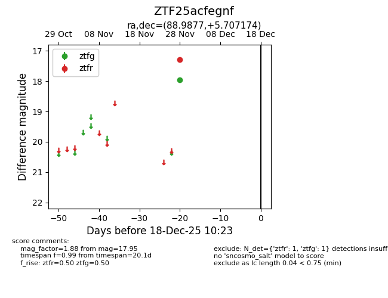
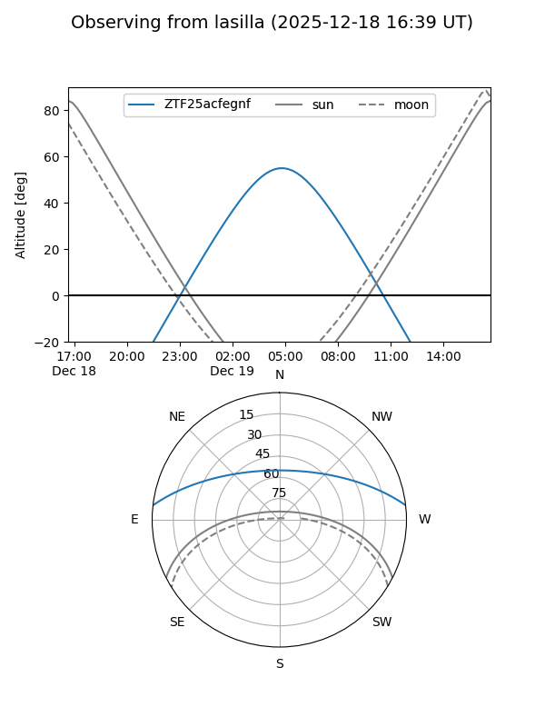
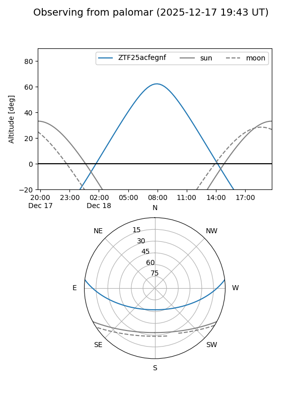

ZTF25acfegnf
Target ZTF25acfegnf at 2025-12-18 11:17
Aliases and brokers:
FINK: fink-portal.org/ZTF25acfegnf
Lasair: lasair-ztf.lsst.ac.uk/objects/ZTF25acfegnf
ALeRCE: alerce.online/object/ZTF25acfegnf
alt names
ZTF25acfegnf (ztf,fink_ztf)
Coordinates:
equatorial (ra, dec) = 88.9877,+5.70717
equatorial (HMS+DMS) = 05:55:57.05,+05:42:25.83
galactic (l, b) = (201.3895,-9.61178)
Photometry
last ztfg=17.95, ztfr=17.28
1 ztfg, 1 ztfr detections
Lightcurve

Visibility


Additional plots